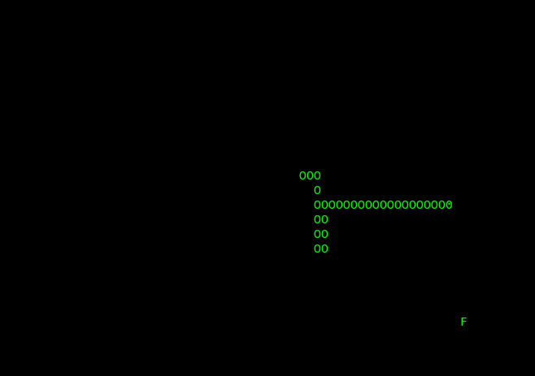

I scripted an AI solver fo the snake game. I used the already scripted snake game of Enginner-man ( Snake code ) and made some modifications to make it happen. I added a function for the snake to be able to cross the wall from right to left (see cross_wall(snake_head) function in the code for details) and the AI solver (see AI(snake) function in the code for details). I also changed the food and snake appearance (respectivelly F and OOO0 ).

The AI solver is quite simple, it always move from left to right to avoid crashing into itself. If the tail is too close, the snake starts zigzagging up to down (moving +1 right when reaching top or bottom). If the tail is far (at least 3 y-points away from the head), the snake moves right or toward the center of the screen. The snakes moves toward the food only once on the same y-axis otherwise, it keeps on moving right or toward the x-axis center.
To see the AI snake wining, download the code here: Snake AI code then run it on your terminal using Python 3. Make sure curses is already install ( pip install windows-curses otherwise). To decrease speed, change w.timeout(1) to w.timeout(100) on line 9.
Just for fun, you can play a home-made snake game here (you need a keyboard).